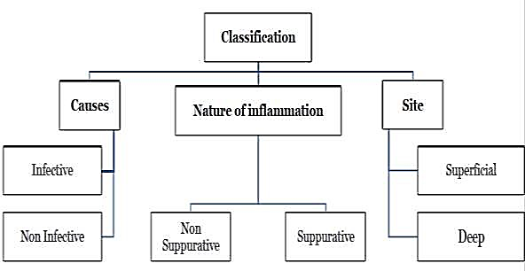

Cornea · Keratitis
Definition and classification
Definition: it is inflammation of the cornea.
Classification of keratitis according to its causes:
1) Infective:
- Causative organism: bacterial, viral, fungal, or parasitic.
- Source of infection:
- Exogenous, from organisms in the conjunctival sac.
- Endogenous, rare as the cornea is avascular.
- Spread from nearby tissues through anatomical continuity in conjunctivitis, scleritis, and uveitis.
2) Non-infective:
- a) Traumatic:
- Thermal or chemical trauma or even physical trauma by ultraviolet rays.
- Mechanical trauma.
- b) Allergic: whether to endogenous or exogenous antigen.
- c) Degenerative as in neurotropic keratitis.
